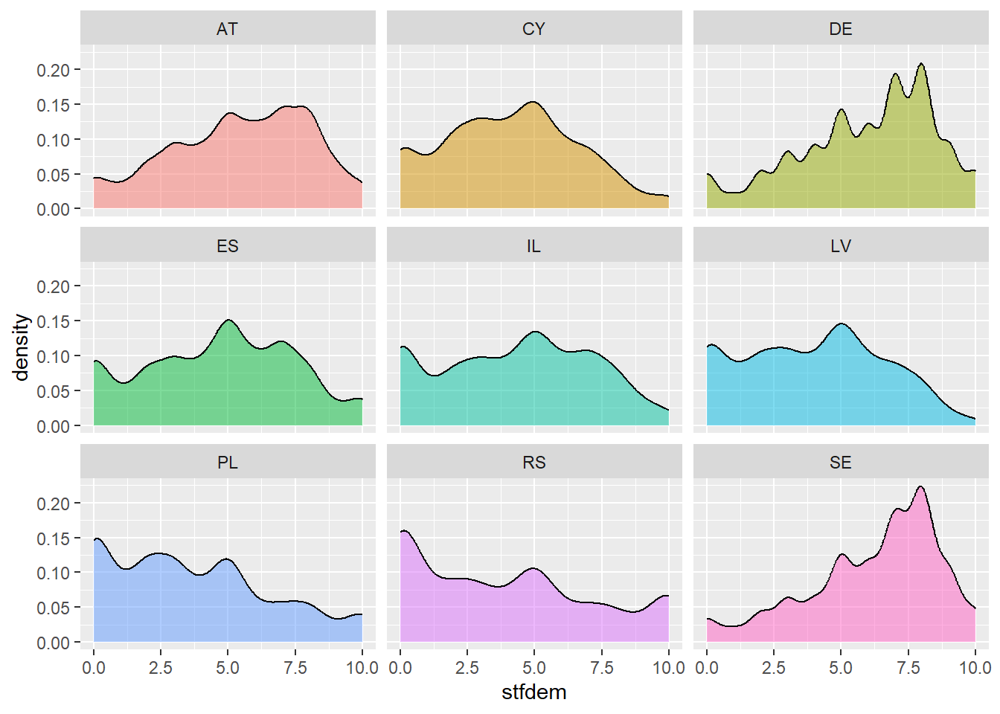

pacman::p_load(
"tidyverse",
"ggridges",
"gghalves"
)Example - Session 6: Uncertainty
Coding example
Load libraries:
Load data:
We use data from the latest wave of the European Social Survey (Self-completion):
# https://ess-search.nsd.no/en/study/172ac431-2a06-41df-9dab-c1fd8f3877e7
ESS10SC <- read_csv("C:/Users/David/Desktop/ESS10SC.csv")
# codebook: https://stessrelpubprodwe.blob.core.windows.net/data/round10/survey/ESS10SC_appendix_a7_e03_0.pdf
# idno - Person ID
# cntry - Country
# stfdem - Satisfaction with democracy
# stfgov - Satisfaction with the governmentFirst, we are only interested in satisfaction with democracy in each country. We have to remove missing values in the satisfaction with democracy variable. As it ranges from 0 to 10, we can just filter all other values. The same is true for satisfaction with the government:
ess <- ESS10SC %>%
select(idno, cntry, stfdem, stfgov) %>%
filter(stfdem <= 10) %>%
filter(stfgov <= 10)Histograms
Histogram of satisfaction with democracy. Bin width of 1 and white edges of bars.
ggplot(ess,
aes(x = stfdem)) +
geom_histogram(binwidth = 1,
color = "red")Forcing the bins to start at whole numbers. Therefore, we use the boundary argument.
ggplot(ess, aes(x = stfdem)) +
geom_histogram(binwidth = 1,
color = "white",
boundary = 5) Now, we want to have a look at the distribution of stfdem by country:
ggplot(ess, aes(x = stfdem,
fill = cntry)) +
geom_histogram(binwidth = 1,
color = "white",
boundary = 1) This graph is very colorful, but it’s basically impossible to interpret. We should not only use filling, but also facets by month. This way, we generate separate graphs for each country. Therefore, we can turn off the fill legend as it has become redundant.
ggplot(ess, aes(x = stfdem,
fill = cntry)) +
geom_histogram(binwidth = 1,
color = "white",
boundary = 1) +
guides(fill = "none") +
facet_wrap(vars(cntry))Density plots
To create a density plot, our code is nearly identical to what we used for the histogram. We only change the geom layer:
ggplot(ess, aes(x = stfdem)) +
geom_density(color = "grey20", fill = "grey80")We can change some of the calculus options if we want:
ggplot(ess, aes(x = stfdem)) +
geom_density(color = "grey20",
fill = "grey80",
bw = 0.5,
kernel = "rectangular")Another way might be to fill by country. It is necessary to make the different layers transparent to a certain degree to see through the whole stack.
ggplot(ess,
aes(x = stfdem,
fill = cntry)) +
geom_density(alpha = 0.5)Similarly to our histogram, this is difficult to interpret. Therefore, we use facets again:
ggplot(ess,
aes(x = stfdem, fill = cntry)) +
geom_density(alpha = 0.5) +
guides(fill = "none") +
facet_wrap(vars(cntry))
Furthermore, we can stack the (density) plots behind each other using ggridges. For that to work, we need to map cntry to the y-axis.
ggplot(ess, aes(x = stfdem,
y = cntry,
fill = cntry)) +
geom_density_ridges() +
guides(fill = "none")Picking joint bandwidth of 0.548Now, we can add further information to geom_density_ridges() with some other arguments like quantile_lines. We can use the quantiles argument to tell the plow how many parts to be cut into. Since we just want to show the median, we’ll set that to 2 so each density plot is divided in half:
ggplot(ess, aes(x = stfdem,
y = cntry,
fill = cntry)) +
geom_density_ridges(quantile_lines = TRUE,
quantiles = 2) +
guides(fill = "none")Warning: Using the `size` aesthetic with geom_segment was deprecated in ggplot2 3.4.0.
ℹ Please use the `linewidth` aesthetic instead.Now that we have good working code, it is easy to substitute in other variables by changing the x mapping:
ggplot(ess, aes(x = stfgov,
y = cntry,
fill = cntry)) +
geom_density_ridges(quantile_lines = TRUE,
quantiles = 2) +
guides(fill = "none")Box, violin, and rain cloud plots
In addition, we can look at the distribution of variables with box plots, violin plots, etc.
First, we’ll make a box plot of satisfaction with democracy:
ggplot(ess,
aes(y = stfdem)) +
geom_boxplot()We can switch this to a violin plot by just changing the geom layer:
ggplot(ess,
aes(y = stfdem,
x = "")) +
geom_violin()With violin plots it’s typically good to overlay other geoms. We can add some jittered points for a strip plot:
ggplot(ess,
aes(y = stfdem,
x = "")) +
geom_violin() +
geom_point(size = 0.2, position = position_jitter(width = 0.1)) +
guides(fill = "none")Overlaying the points directly on top of the violins shows extra information. However, it is also more crowded and more difficult to read. We can use the gghalves package to generate special halved versions of some of these geoms:
ggplot(ess,
aes(y = stfdem,
x = "")) +
geom_half_point(side = "l", size = 0.5) +
geom_half_boxplot(side = "r")Note the side argument for specifying which half of the column the geom goes. We can also use geom_half_violin():
ggplot(ess,
aes(y = stfdem,
x = "")) +
geom_half_point(side = "l", size = 0.5) +
geom_half_violin(side = "r")And finally, if we flip the plot, we can generate a rain cloud plot:
ggplot(ess,
aes(y = stfdem,
x = "")) +
geom_half_boxplot(aes(alpha = 0.2), side = "l", width = 0.05, nudge = -0.15) +
geom_half_point(side = "l", size = 0.2) +
geom_half_violin(side = "r", nudge = 0.2) +
coord_flip()
```
Your turn!
Adapt the code to
look at satisfaction with democracy in Germany for different subgroups you are interested in. This could include, for example, gender, party identification, political ideology, …
create a raincloud plot for only Germany.
get the ESS data from earlier waves and compare satisfaction with democracy (or any other variable) with ridgeplots over time!
or use the code to visualize uncertainty in a data set of your choice!